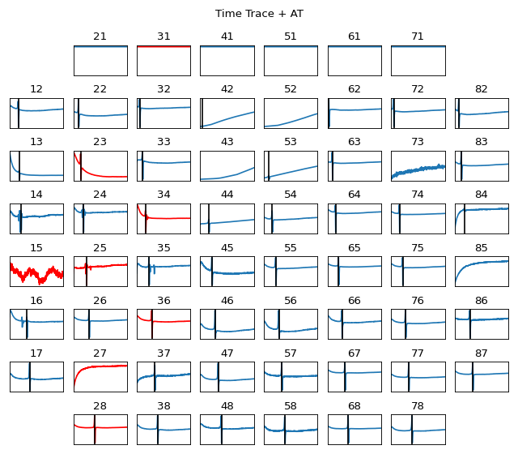
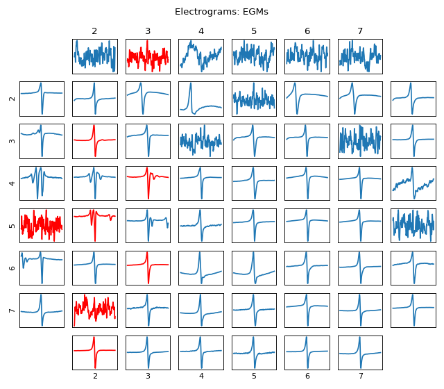

spkit.mea.plot_mea_grid¶
- spkit.mea.plot_mea_grid(X, ch_labels, fs=25000, bad_channels=[], act_spikes=[], rep_spikes=[], fill_apd=False, fill_color='C0', verbose=1, xlim=(None, None), limy=False, ylim=(None, None), figsize=(12, 9), title_style=1, show=True, title='')¶
Plot MEA Grid 8x8: Visualisation of EGM/Signal in MEA Grid Form
Plot MEA Grid 8x8: Visualisation of EGM/Signal in MEA Grid Form
- Parameters:
- X: np. array
(nch,n) - nch = number of channels, n=number of samples of a SINGLE CYLCLE
axis=0 is a channel.
- fs:int
sampling frequency,
- ch_labels: list
list of label of each channel.
It is used to arrange signals in MEA grid
- bad_channels: list
list of bad channels, should be inclusive of ch_labels
Bad channels are plotted with red color
if passed empty list, all the channels are considered good and plotted in Blue
- act_spikes: list
list of activation spike location for each channel
Same length as number of channels. If passed, it is used to display activation time as
a verticle line with black color, if passed as empty, no line is plotted.
- rep_spikes: list
list of repolarisation spike location for each channel.
Same length as number of channels. If passed, it is used to display repolarisation time as
a verticle line with green color, if passed as empty, no line is plotted.
- fill_apd: bool,
if True, a region between activation time and repolarisation time is shaded with ‘fill_color’
- fill_color: str,
color to fill for APD
- xlim: tuple (t0,t1), default = (None,None)
x-axis limits in ms. To zoom in or plot specific duration
- ylim: tuple (y0,y1), default = (None,None)
y-axis limits. To zoom in or plot specific height
only used if limy=True
- limybool, default=False.
if True, y-axis of all the channels are fixed to same limit
If True, and ylim = (None, None), min and max of all the channels are computed as used same for all channels
- figsize=(12,9): Figure size
- title_style: int,
if 1 : each channels has its title,
if 2 : only plots at boundaries has index number
- title: str, default =’’
title of whole figure
- show: bool, default = True,
if True, plt.show() is executed, if false, not.
useful if to edit some properties of figure
- verbose: 0 Silent
1 a few details
2 all the computations
- Returns:
- None
display: plots
See also
Examples
#sp.mea.plot_mea_grid import numpy as np import matplotlib.pyplot as plt import os, requests import spkit as sp # Download Sample file if not done already file_name= 'MEA_Sample_North_1000mV_1Hz.h5' if not(os.path.exists(file_name)): path = 'https://spkit.github.io/data_samples/files/MEA_Sample_North_1000mV_1Hz.h5' req = requests.get(path) with open(file_name, 'wb') as f: f.write(req.content) fs = 25000 stim_fhz=1 exclude_first_dur=2 dur_after_spike=500 exclude_last_cycle=True at_range = [0,50] dur_from_loc = 5 remove_drift = True bad_channels_list = [15,23, 25, 27, 28, 31, 34, 36] X,fs,ch_labels = sp.io.read_hdf(file_name,fs=fs,verbose=1) stim_loc,_ = sp.mea.get_stim_loc(X,fs=fs,fhz=stim_fhz, plot=0,verbose=0) XB = sp.mea.align_cycles(X,stim_loc,fs=fs, exclude_first_dur=exclude_first_dur,dur_after_spike=dur_after_spike, exclude_last_cycle=exclude_last_cycle,pad=np.nan,verbose=True) X1B = np.nanmean(XB,axis=2) at_loc = sp.mea.activation_time_loc(X1B,fs=fs,at_range=at_range) XE,ATloc = sp.mea.extract_egm(X1B,act_loc=at_loc,fs=fs,dur_from_loc=dur_from_loc,remove_drift=remove_drift) sp.mea.plot_mea_grid(X1B,act_spikes=at_loc,ch_labels=ch_labels,bad_channels=bad_channels_list, xlim=at_range,verbose=True, figsize=(8,7),title_style=1, title='Time Trace + AT') sp.mea.plot_mea_grid(XE,ch_labels=ch_labels,bad_channels=bad_channels_list,verbose=True, figsize=(8,7),title_style=2, title='Electrograms: EGMs')
 